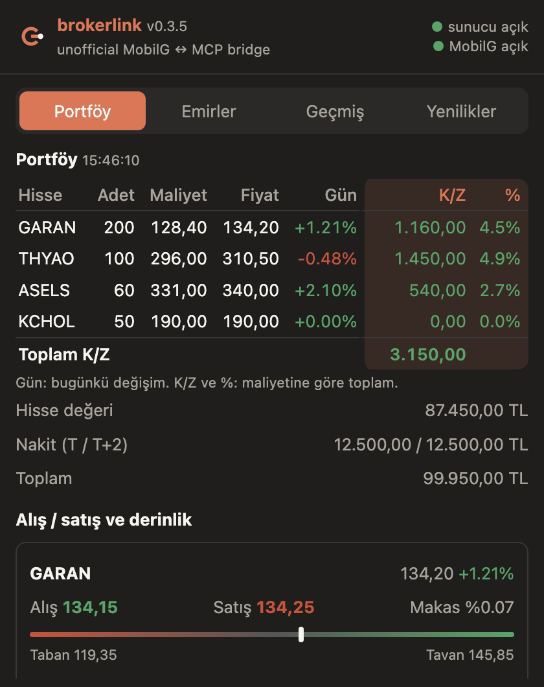
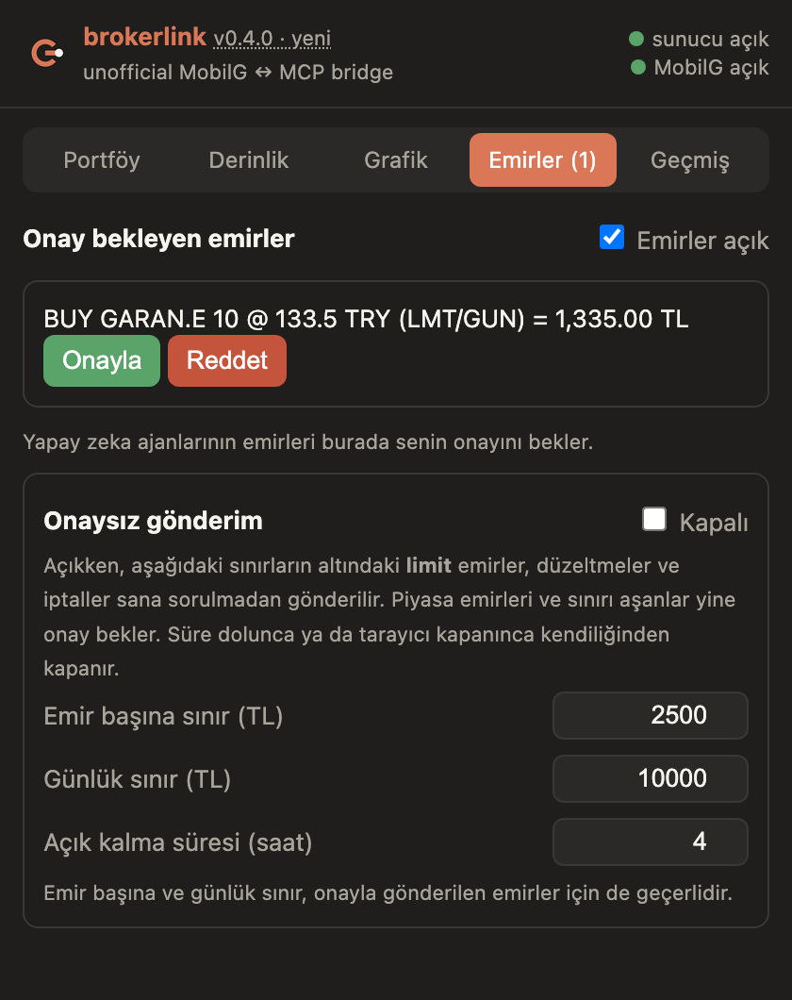
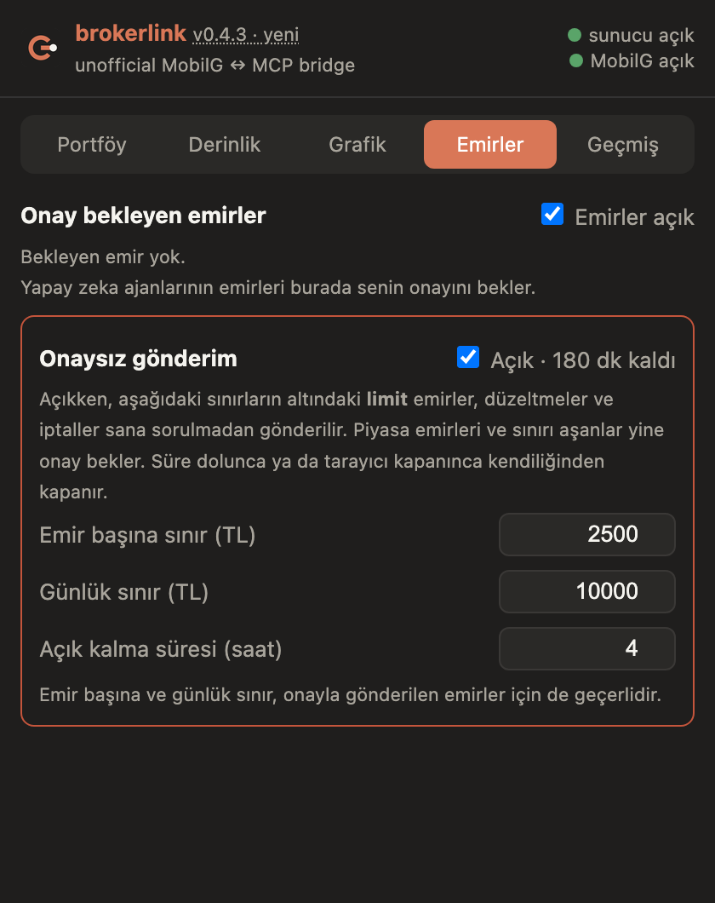
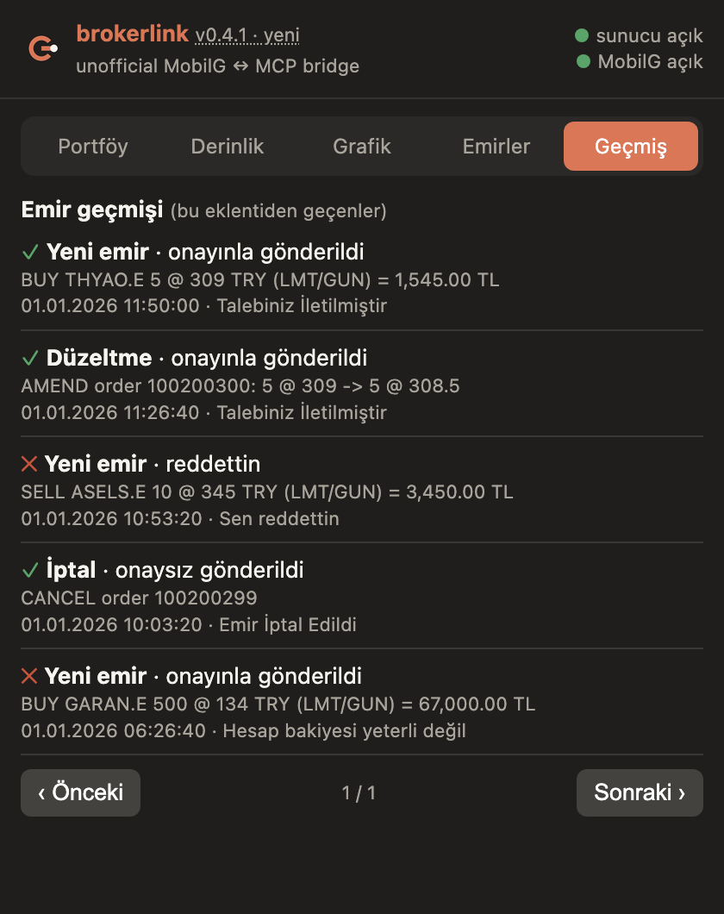
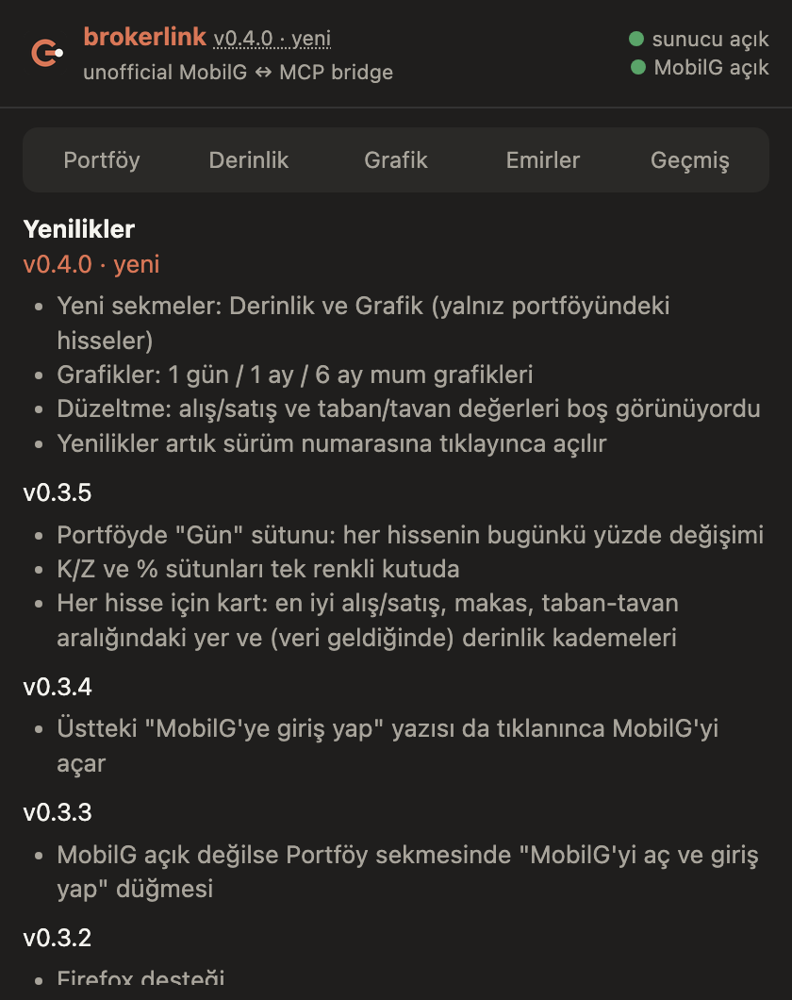

Overview
brokerlink is a free, open-source Chrome extension and local MCP server that lets Claude, Codex, Gemini and other AI tools read your own PhillipCapital MobilG brokerage account through your logged-in browser tab.
Unofficial. Not affiliated with PhillipCapital. For your own account only. Not investment advice.
- Nothing to configure after login: the session is read inside your tab at call time.
- The session never leaves the browser tab.
- The tab is never opened or reloaded by brokerlink.
- Every call is checked against one allowlist, twice.
Popup tour
The images use sample data, not a real account. The popup is in Turkish; each part is explained below.
1. Portföy (portfolio)

Read live from your MobilG tab every time you open the popup.
- Top right: two status dots: the local daemon ("sunucu") and the logged-in MobilG tab.
- Table: symbol, quantity (Adet), average cost (Maliyet), last price (Fiyat), profit/loss in TL (K/Z) and in percent.
- Below: total profit/loss, value of shares, cash today and after settlement (T / T+2), and the account total.
2. Emirler (orders): approval

Orders queued by an AI client wait here.
- Card: the exact order: side, symbol, quantity, price, type and total.
- Onayla / Reddet: approve sends it to MobilG; reject drops it. The AI is told which one you chose.
- Emirler açık: master switch. Off = every order tool is refused.
- The tab label shows how many orders are waiting.
3. Emirler: Onaysız gönderim (send without approval)

Off by default. While on, small limit orders skip the approval click.
- Switch: asks for confirmation and shows the minutes left.
- Emir başına sınır: largest single order in TL.
- Günlük sınır: total per day in TL.
- Açık kalma süresi: hours until it switches itself off. It also ends when the browser restarts.
- Market orders and anything above the limits still wait for your click. The two limits also apply to approved orders.
4. Geçmiş (history)

Every order that passed through the extension, newest first, eight per page.
- ✓ / ✕: accepted by MobilG or not.
- How: sent with your approval, sent without approval, or rejected by you.
- Last line: time and MobilG's own answer, for example why an order was refused.
5. Yenilikler (what's new)

Release notes for each version and the time of the last update check. When a newer version exists a banner with a Güncelle (update) button appears at the top; if a release is marked as required, the popup locks until you update.
Quick start
git clone https://github.com/nsozturk/brokerlink.git && cd brokerlink
pip install -r requirements.txt
python3 server/brokerlink.py serve- Chrome, Edge, Brave:
chrome://extensions→ Developer mode → Load unpacked →extension/. Firefox 121+: build withpython3 scripts/package.py, loaddist/brokerlink-firefox-*.xpifromabout:debugging, then click İzin ver in the popup. Ready-made zip, crx and xpi files are attached to each release. - Open MobilG and log in as usual.
- Register the stdio MCP server in your client.
Connect an AI client
claude mcp add --scope user brokerlink -- python3 /path/server/brokerlink.py mcpcodex mcp add brokerlink -- python3 /path/server/brokerlink.py mcp# Antigravity (eski adıyla Gemini CLI)
agy mcp add brokerlink python3 /path/server/brokerlink.py mcp// Antigravity (eski adıyla Gemini CLI): ~/.gemini/settings.json
"mcpServers": {"brokerlink": {"command": "python3", "args": ["/path/server/brokerlink.py", "mcp"]}}// OpenCode: opencode.json
"mcp": {"brokerlink": {"type": "local", "command": ["python3", "/path/server/brokerlink.py", "mcp"]}}MCP tools
| Tool | Purpose |
|---|---|
catalog() | List endpoints and parameters |
read(name, params) | Call a read endpoint |
write(name, params, body) | Follow lists and price alarms |
place_order / cancel_order / amend_order / order_result | Queue an order action for human approval |
Endpoint catalog
| Name | Params | What |
|---|---|---|
portfolio | date | Positions, cost, P/L, cash balances (T/T+1/T+2), credit limit. date=YYYY-MM-DD |
overall_history | startDate, endDate | Portfolio value history (chart data) |
bank_statement | startDate, endDate | Cash account statement (movements). Dates YYYYMMDD |
stock_extract | startDate, endDate | Securities (lot) movements. Dates YYYYMMDD |
executed_transactions | startDate, endDate, symbolId | Executed trades over a date range (no 10-day limit). Dates YYYYMMDD. Omit symbolId for all symbols (an empty string is rejected with 400) |
transaction_result_form | transactionDate | Daily trade confirmation (işlem sonuç formu). YYYYMMDD |
stoppage | — | Withholding tax (stopaj) summary |
stoppage_detail | instrument | Withholding tax detail for one instrument |
order_tracking | chainOrderActive, realizedDetail, retType | Today's equity orders (all channels). Defaults chainOrderActive=1 retType=2 |
synthetic_orders | — | Waiting conditional (synthetic) orders |
synthetic_order_logs | symbolId, startDate, finishDate | Conditional order history. Dates DD/MM/YYYY |
order_summary | transactionDate | Order summary info for a day |
sub_markets | — | Sub-markets the account may trade |
gmo_positions | retType | Foreign (GMO) positions |
price_info | symbolId, symbol, market, buyCell, detail | Bid/ask, floor/ceiling, limit, sellable balance, cost, gross settlement flag |
current_price | symbolId, stock, market | Current price |
depth | symbolId | Order book snapshot: b0..b4 bid px, w0..w4 bid qty, a0..a4 ask px, v0..v4 ask qty, k0..k4 order counts (levels = depth licence) |
last_trades | symbolId | Recent trades tape: price, quantity, time |
akd | stockCode | Broker distribution (AKD). Empty without AKD licence |
metrics | symbol, type | 52w high/low, returns, avg volume, valuation metrics |
stock_detail | symbol | Company / instrument detail |
stock_list | type, buySell, shortSell | All instruments with symbolId (sid), market, prices. type=dashboard shortSell=0 |
highlights | — | Highlighted symbols |
model_portfolio | — | Broker model portfolio |
stock_reports | page, symbol | Research reports list |
stock_report_detail | id | One research report |
foreign_price | stock | Foreign stock price |
depth_steps | highPrice, lowPrice, stepPrice, selectedPrice | Price ladder steps between two prices |
stock_messages | market | Market/session notices |
follow_lists | — | Follow lists (watchlists) and their symbols |
kap_for_symbol | symbol | KAP disclosures for a symbol |
kap_notifications | readStatus | User's KAP notifications |
news_categories | — | News categories |
news | categoryId, page | News list |
price_alarms | — | Price alarms |
position_notifications | — | Fill / position notifications |
messages | readStatus | Broker messages |
ai_profile | — | AI trading authorization profile (read only) |
ai_pending | customer_no | Pending AI order confirmations (read only) |
viop_overall | transactionDate | VIOP overall |
viop_orders | — | VIOP orders |
viop_executed | startDate, endDate, rptId, sessionId, contract | VIOP executed |
viop_account_extract | startDate, endDate | VIOP account extract |
viop_cash_movements | startDate, endDate | VIOP cash movements |
viop_pnl | startDate, endDate | VIOP P/L report |
viop_price | symbolId | VIOP contract price |
viop_collateral_balance | — | VIOP collateral balance |
viop_collateral_report | startDate, endDate | VIOP collateral report |
t0_report | startDate, finishDate | T+0 usage report |
t0_price_tables | — | T+0 price tables |
transfer_in | — | Incoming securities transfers (virman) |
transfer_out | — | Outgoing securities transfers |
credit_info | — | Credit info |
eft_history | startDate, FinishDate, status | EFT history (read only; no transfer endpoints exist here) |
fx_balance | pageType | Foreign currency balances |
fx_rates | — | FX rates |
foreign_summary | — | Foreign shares account summary |
foreign_history | startDate, endDate, sessionId | Foreign shares history |
foreign_derivative | startDate, endDate, rptId | Foreign derivatives |
public_offerings | requestType | Open public offerings (halka arz) |
public_offering_requests | publicOfferingId, requestType, allPublicOfferings | Your public offering requests |
fund_types | — | Fund types |
fund_founders | — | Fund founders |
fund_list | fundTransactionPlace, fundType, fundBuilderCode | Funds |
fund_requests | — | Your fund requests |
fund_sale_list | — | Fund sale list |
server_time | — | Server time |
chart_history | symbol, resolution, from, to, session, menkultype, description | OHLCV candles (TradingView UDF). resolution 1,5,15,60,1D...; from/to unix seconds |
Safe writes
| Name | What |
|---|---|
follow_add | Add a symbol to a follow list |
follow_delete | Remove a symbol from a follow list |
follow_reorder | Reorder a follow list |
list_add | Create a follow list |
list_update | Rename a follow list |
list_delete | Delete a follow list |
alarm_add | Add a price alarm |
alarm_delete | Delete a price alarm |
Orders and safety
Orders are on by default with a switch in the popup. An order from an AI is only queued; it is sent when you click Onayla (approve) in the popup. Caps: max_order_try 2,500 TL, max_daily_try 10,000 TL.
Auto-send ("Onaysız gönderim")
A separate card in the popup, off by default. While on, limit orders, amendments and cancels below your own limits (per order, per day) are sent without asking, for the number of hours you choose; it also ends when the browser restarts. Market orders and larger orders still wait for a click. An agent steered by text it reads elsewhere can then trade real money within those limits.
History and notifications
Every order gets a notification with MobilG's answer and a line in the popup's history tab.
Never included: EFT, transfers, FX conversion, collateral moves, login, password, settings, AI-authorization switches.
Placing an order
Experimental: test with one lot and a far-away limit price first.
- Check the switch in the popup ("Emirler açık").
- Find the instrument:
read("stock_list", {"type":"dashboard","shortSell":"0"})→sidand the code with suffix, e.g.GARAN.E. - Look at the price:
read("price_info", …)for bid, ask, floor, ceiling;read("depth", {"symbolId": sid})for the order book. - Queue the order:
place_order(symbolId, stock, side, quantity, price); optionaltypelimit|market,tifday|ioc. The reply saysawaiting_user_approval; nothing is sent yet. - Approve in the browser: open the popup, read the preview, click Onayla (approve) or Reddet (reject) in the Emirler tab.
- The AI gets the outcome: the call waits (50 s by default) and returns
outcome:sent_to_broker(with broker order id and message),rejected_by_user,refused_by_brokerorawaiting_user_approval(ask again withorder_result(id)). - Follow it:
read("order_tracking").
Change or cancel a working order with amend_order(orderId, oldPrice, oldAmount, newPrice, newAmount) and cancel_order(orderId); both need the same click.
| Refusal | Meaning |
|---|---|
| orders are disabled | The popup switch is off |
| exceeds max_order_try / daily cap reached | Above the limits set in the popup (2,500 TL per order, 10,000 TL per day by default) |
| 409 | No logged-in MobilG tab |
| 426 | Extension update required |
Architecture
AI client --stdio MCP--> brokerlink.py mcp --HTTP--> brokerlink.py serve (127.0.0.1:18890)
^ long-poll
Chrome extension --executeScript--> logged-in MobilG tabRaw responses are stored in data/raw.sqlite with session fields redacted.
Updates
The daemon runs one git fetch every 3 hours. The popup lists what is new and has an Update button (pull + reload). A release may set min_supported to force older builds to update.
Troubleshooting
| Symptom | Cause and fix |
|---|---|
| timed out | Start python3 server/brokerlink.py serve; the popup must show Daemon "running" |
| 409 | No logged-in MobilG tab in this Chrome profile |
| 401 / 403 from MobilG | The session ended (often after a page reload). Log in again |
| 426 | Popup → Update |
| Orders "disabled" but the switch is on | Your AI client holds an old MCP process; restart the client |
depth returns zeros | Market closed or no depth licence |
metrics returns zeros | It only covers foreign stocks |
Privacy
Leaves your machine: calls to MobilG from your own tab and one git fetch every 3 hours. No analytics. Responses are stored locally in data/raw.sqlite with session fields redacted.
AI agent integration
Repo rules: AGENTS.md. Paste-in rule for your assistant: GLOBAL_AGENT_RULE.md. Machine summary: llms.txt.
FAQ
Do I have to copy tokens or cookies after logging in?
No. The extension reads the session inside the MobilG tab at the moment of each call, so it works as soon as you are logged in.
Can an AI place trades with this?
An agent can only queue an order; a person must click Approve in the extension popup, and a popup switch turns orders off entirely.
Can it withdraw or transfer money?
No. Money-out and transfer endpoints are on a deny list in both the daemon and the extension.
Does it work with claude.ai or ChatGPT in the browser?
No. Cloud chat apps cannot reach a localhost server. Use a local client such as Claude Code, Codex, Antigravity (eski adıyla Gemini CLI), OpenCode, Cursor or Claude Desktop.
Is it an alternative to Phillip Intelligence?
It complements it. Phillip Intelligence is the official MCP for claude.ai and ChatGPT; brokerlink is an unofficial read-first bridge for local AI clients.